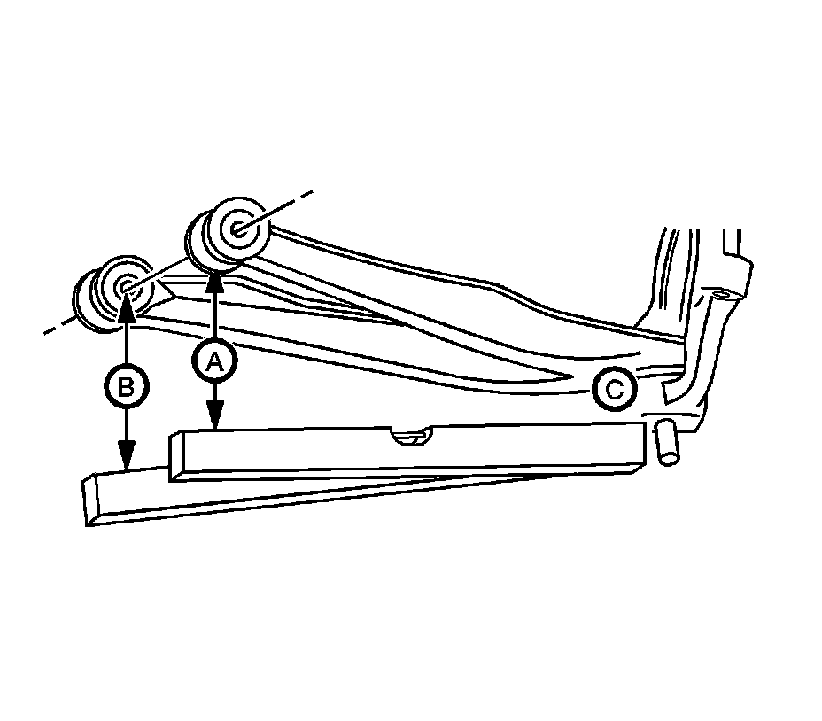
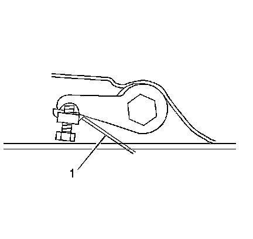
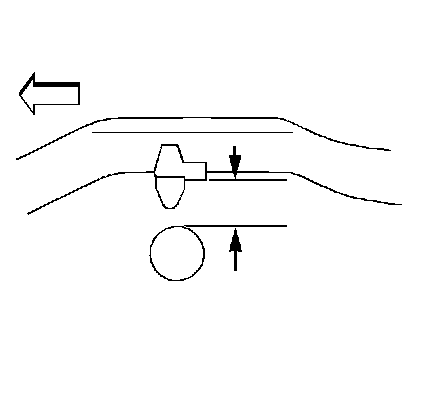

Trim Height Inspection
Trim Height Inspection
Trim Height Measurements
Trim height is a predetermined measurement relating to vehicle ride height. Incorrect trim heights can cause bottoming out over bumps, damage to the suspension components, and symptoms similar to wheel alignment problems. Check the trim heights when diagnosing suspension concerns and before checking the wheel alignment.
Perform the following before measuring the trim heights:
^ Ensure the vehicle is on a level surface, such as an alignment rack.
^ Ensure that the suspension is fully supporting the vehicle.
^ Remove the alignment rack floating pins.
^ Set the tire pressures to the pressure shown on the certification label. Refer to Vehicle Certification, Tire Place Card, Anti-Theft, and Service Parts ID Label.
^ Inspect the fuel level. Add additional weight if necessary to simulate a full tank.
^ To ensure proper weight distribution make sure the rear storage compartment is empty.
^ Close all doors, lift gate/trunk and the hood.
Z Height Measurement
Important: K models only-The Z height must be adjusted before the alignment.
The Z height dimension measurement determines the proper ride height for the front end of the vehicle. Vehicles equipped with torsion bars use a adjusting arm in order to adjust the Z height dimension. Vehicles without torsion bars have no adjustment and could require replacement of suspension components.
Important: All dimensions are measured vertical to ground. Cross vehicle Z heights should be within 12 mm (0.47 in) to be considered correct.
1. Jounce the front and rear suspension to obtain at least 38 mm (1.5 in) deflection, then allow the vehicle to settle.

2. Set the top edge of the level on the reference surface of the steering knuckle (C) and extend the level directly under the rear end of the front attachment bolt of the lower control arm (A).
3. While keeping the level in contact with the knuckle reference surface, adjust the level up/down until the bubble indicates it is horizontally level.
4. Extend a tape measure straight down from the center of the attachment bolt. The point where the tape measure and the level intersect is your first measurement.
5. Keep the top edge of the level on the reference surface of the steering knuckle (C) and move the level directly under the front end of the rear attachment bolt of the lower control arm (B).
6. Extend a tape measure straight down from the center of he attachment bolt. The point where the tape measure and the level intersect is your second measurement.
7. Average the 2 readings (add them together, then divide by 2) and write down the result.
8. Repeat steps 1 through 7 a total of 3 times, writing down the results.
9. Average the results (add them together, then divide by 3) and this result is your final Z height number.
10. Compare your Z height number with the Service Information Z height specification. Refer to Trim Height Specifications.
Z Height Adjustment

1. For vehicles equipped with a torsion bar suspension, turn the bolt (1) that contacts the torsion arm as needed. One revolution of the bolt (1) into the nut increases the Z height by approximately 6 mm (0.2 in).
2. For vehicles without torsion bars, replace damaged or worn components as necessary.
3. If these measurements are still out of specifications after adjustment or are not equipped with torsion bars, inspect for the following:
^ Sagging front suspension-Refer to Torsion Bar Replacement (2500 Series).
^ Collision damage
D Height Measurement
Important: There are no specified trim heights specifications on leaf spring vehicles because it is not an adjustable feature. The height of the suspension will depend on the option content of the vehicle as well as the aftermarket equipment that is placed on the vehicle. The measurements are used for comparison only and should be within 15 mm with the vehicle at curb and no accessories.
1. Place a hand on the rear bumper and jounce the rear of the vehicle. Ensure that there is at least 38 mm (1.5 in) of movement while jouncing.
2. With the vehicle on a flat surface, lift upward on the rear bumper 38 mm (1.5 in).
3. Allow the vehicle to settle into position.

Important: Measure the metal to metal contact points of the rear axle to the frame on the inboard side of the leaf springs.
4. Measure the D height by measuring the distance between the bumper bracket and the top of the rear axle tube.
5. Repeat the jouncing operation 2 more times for a total of 3 times.
6. Use the highest and lowest measurements to calculate the average height.
7. The true D height dimension number is the average of the highest and the lowest measurements.
8. If these measurements are out of specifications, inspect for the following conditions:
^ Sagging front suspension-Refer to Torsion Bar Replacement (2500 Series).
^ Sagging rear leaf/coil springs-Refer to Coil Spring Replacement.
^ Improper tire inflation-Refer to Vehicle Certification, Tire Place Card, Anti-Theft, and Service Parts ID Label.
^ Improper weight distribution
^ Collision damage